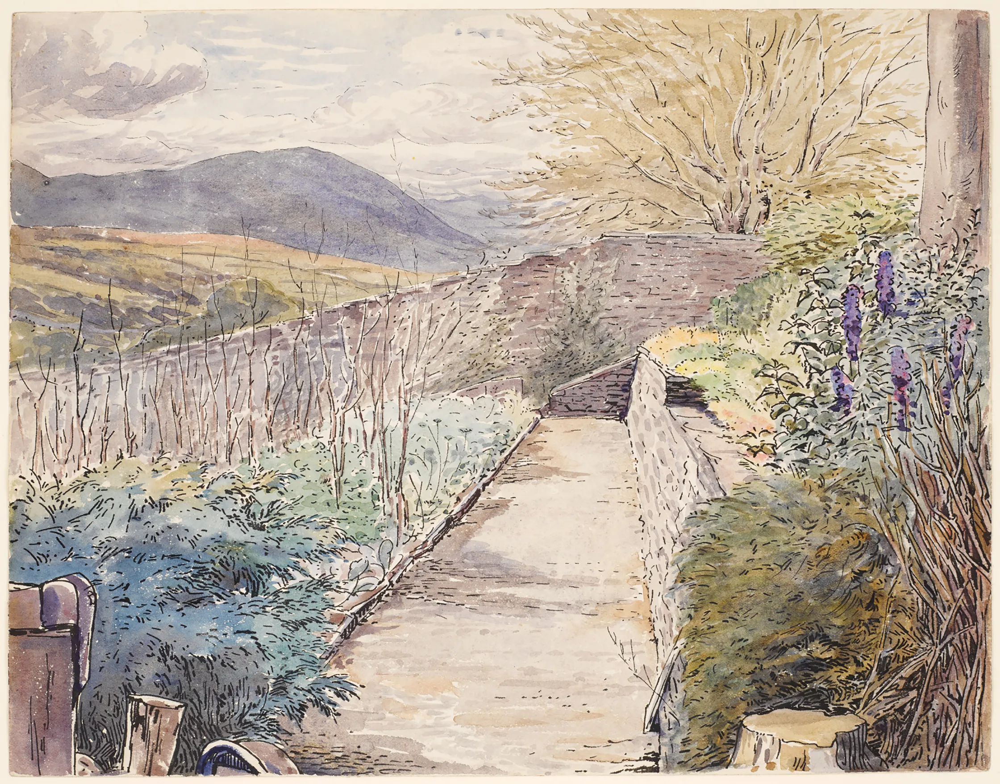
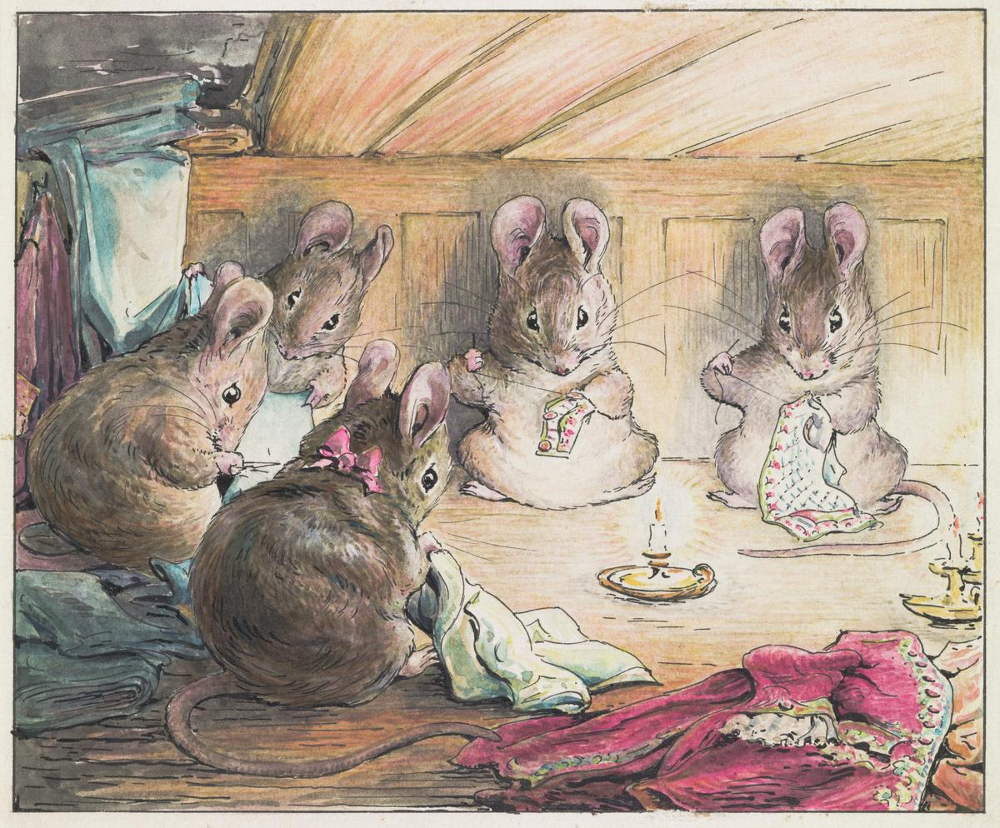

    <section id="gallery" class="bg-light">
    <div id="carousel" class="carousel slide" data-bs-ride="carousel" data-bs-interval="3000" >
        <div class="carousel-inner">
            <div class="carousel-item active">
                
            </div>
            <div class="carousel-item">
                
            </div>
            <div class="carousel-item">
                
            </div>
        </div>
        <button class="carousel-control-prev" type="button" data-bs-target="#carousel" data-bs-slide="prev">
            <span class="carousel-control-prev-icon" aria-hidden="true"></span>
        </button>
        <button class="carousel-control-next" type="button" data-bs-target="#carousel" data-bs-slide="next">
            <span class="carousel-control-next-icon" aria-hidden="true"></span>
        </button>
    </div>
    </section>